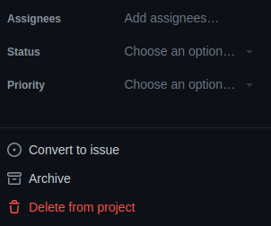
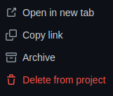
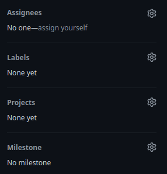
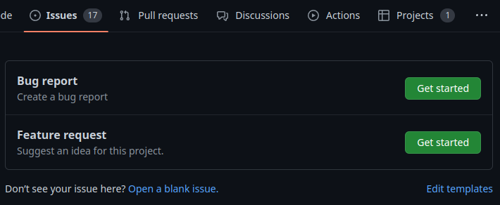

Introducción a GitHub Issues
La automatización de procesos es clave para el incremento de nuestra productividad y nuestra eficiencia, pero la planificación y la organización también juegan un papel importante para conseguirlo. Como vimos en la lección sobre GitHub Projects, tenemos que ser organizados y no tener que invertir mucho tiempo en determinar qué hacer de entre todas las cosas que tenemos pendientes. GitHub Projects y GitHub Issues son claves en esta planificación y organización.
Al finalizar, sabrá:
-
Qué es GitHub Issues.
-
Qué es una propuesta y para qué se usan.
-
Cómo crear propuestas.
-
Cómo suprimir propuestas.
-
Cómo crear plantillas de propuestas.
Introducción
GitHub Issues es un servicio gratuito proporcionado por GitHub que, junto con GitHub Projects, permite la planificación y la organización del trabajo. Es importante tener claro que ambas herramientas se complementan la una a la otra. GitHub Projects permite tener una visión más global del proyecto repartida entre los distintos repositorios con los que trabajamos. En cambio, GitHub Issues está centrada en un determinado repositorio. Se recomienda el uso de ambos servicios para llevar a cabo una mejora en la organización del trabajo de nuestro proyecto.
De cara a GitHub Issues, una issue, en español traducido como propuesta o incidencia, no es más que algo a realizar o proponer para su realización. Puede representar una notificación de un fallo en el software que habría que corregir, una idea que gustaría se realizara, una funcionalidad a llevar a cabo, etc. Podemos verlo también como un trabajo (work) que hay que realizar. La idea es que no deberíamos ponernos a trabajar en algo sin tener su correspondiente issue o propuesta.
Por ejemplo, en el momento de escribir estas líneas, la redacción de este libro se realiza de la siguiente manera. Por un lado, tenemos un proyecto en GitHub Projects en el cual registramos las tareas o ítems propuestos, a realizar o a debatir para los libros de una determina serie editorial, en este caso, la de desarrollo de backends seguros. Para poder trabajar en algo, debe estar registrado en el proyecto, lo priorizamos para centrarnos, por un lado, en los más importantes con respecto a los de menos interés y, por otro lado, en los que tienen un hito más cercano. Una vez se termina un ítem, pasamos al siguiente, desplazando el ítem entre sus distintos estatus (Backlog, Todo, In Progress y Done). Cuando el ítem llega a Todo, no puede pasar a In Progress sin tener claro a qué repositorios va a afectar, por lo que habrá que crearle sus respectivas propuestas en los repositorios correspondientes con GitHub Issues. En nuestro caso, las propuestas se suelen crear primero y, a continuación, se asocian al proyecto correspondiente. Pero en ocasiones, es posible que se cree un ítem en el proyecto y, posteriormente, se cree su propuesta. La clave es que debe aparecer en el proyecto. Cuando llega su momento, se desplaza a In Progress, se tiene en cuenta los repositorios con los que hay que trabajar y manos a la obra. En este punto, se realiza el trabajo, se abre una solicitud de integración, se aprueba y se combina con la rama principal. Una vez hecho, se mueve a Done. ¡Y a por la siguiente tarea!
Siempre que hay una idea, se registra en el proyecto y, así, no se olvida. Si después se implementa o no, es otra historia. La clave es la planificación y la organización del trabajo para mejorar la productividad y reducir los tiempos muertos.
Lo mismo que se hace en la redacción de un libro, se hace, claro está, en el desarrollo de software. Generalmente, es más marcada la cosa porque el software es mucho más difícil de desarrollar que la escritura de un libro. Para quien escribe, ambas son difíciles, pero si tuviera que elegir cuál de las dos lo es más, sin ninguna duda, el desarrollo y el mantenimiento de software ganarían por goleada.
Concepto de propuesta (o issue)
Básicamente, podemos ver una propuesta (issue) como una tarea a realizar. Actualmente, se puede abrir propuestas para solicitar información al proyecto, para notificar incidencias o fallos, proponer funcionalidades, etc. Y todas ellas, son correctas. Aunque para las relacionadas con la información del proyecto, igual es mejor recurrir a GitHub Discussions, centrando las propuestas en incidencias, fallos, funcionalidades y cosas que describan algo que hacer.
A partir de ahora, utilizaremos principalmente el término propuesta, aunque en ocasiones usaremos también issue, porque son muchas las organizaciones que utilizan este término anglosajón, a pesar de la riqueza de nuestro maravilloso idioma.
Las propuestas se componen de varios elementos:
-
Un identificador (identifier) numérico incremental para distinguirlo del resto de manera única e inequívoca.
Estos identificadores se usan en los comentarios precedidos de una almohadilla (
#). Así, por ejemplo, en el siguiente ejemplo se muestra el título de una confirmación (commit) que indica la propuesta a la que está asociada: feat(github-pages): added Liquid filters (#85). Es real y está extraída del repositorio del libro sobre GitHub Pages. -
Un título (title) que describe brevemente el objeto de la propuesta. La redacción de esta lección tiene el siguiente título lesson on GitHub Issues, cuyo identificador es #88.
-
Una descripción (description), una exposición inicial más detallada del objeto de la propuesta. Aquí nos extenderemos todo lo necesario. Recuerde que es posible que la propuesta no la acabe implementando quien la creó.
-
Unas etiquetas (labels) que sirven para categorizar la propuesta como, por ejemplo, enhancement si estamos ante un cambio que añada funcionalidad nueva o una mejora, bug si está relacionada con una notificación de fallo, documentation si estamos ante una mejora de documentación en un proyecto de software, etc.
La redacción de esta lección se etiquetó como enhancement porque añade algo nuevo al libro.
-
Uno o más responsables (asignees), personas encargadas de llevarla a cabo y/o hacerle seguimiento según el tipo de propuesta. En este caso, el responsable de la propuesta para la redacción de esta lección fue un servidor.
-
Un proyecto (project), aquel de GitHub Projects que tiene asociada la propuesta. Recordemos que un ítem de proyecto puede tener asociadas varias propuestas del mismo o distinto repositorio.
-
Un hito (milestone) que indica en qué iteración se debe realizar. Es recomendable clasificar las propuestas en hitos para que no se escapen del que tienen asignado. Si las clasificamos en un hito u otro, cuando estemos trabajando en alcanzar uno determinado, cogeremos propuestas de ese hito y no de otro.
Pero ojo, es posible que su proyecto esté relacionado con varios repositorios. Este es el caso de Akromio. El proyecto gestiona, en un punto centralizado, los cambios a realizar en varios repositorios, porque todos ellos forman el proyecto y sus cambios deben administrarse y organizarse de manera conjunta. En este caso, para controlar el hito como tal, o la iteración en la que un ítem se debe implementar, no se realiza mediante Milestone, sino mediante un campo When. Cada proyecto es un mundo y hay que ser flexibles y saber adaptarse a las circunstancias. En el caso de Akromio, hacerlo mediante Milestone conllevaría tener que registrar el mismo hito en todos los repositorios. Teniendo en cuenta que el proyecto tiene asociados más de diez repositorios, se hace inviable.
-
Una o más solicitudes de integración (pull requests) con las que se integrarán los cambios realizados durante la implementación de la propuesta en la rama correspondiente.
Lo bueno de asignar solicitudes de integración a las propuestas es que cuando se cierra la solicitud automáticamente se cierra también la propuesta. Así, evita tener que ir a las propuestas y marcarlas como cerradas. Incluso si la propuesta está asociada a un proyecto, esto mandará el ítem asociado a la columna Done también de manera automática. En el caso de los ítems de proyecto, realmente esto es así debido a los flujos de trabajo de GitHub Projects que presentaremos más adelante en el libro.
Estado de las propuestas
El estado de una propuesta (issue state) indica la situación en la que se encuentra. Básicamente, abierta (opened) pendiente de atender o en proceso de desarrollo; y cerrada (closed), realizada o descartada por la razón que sea.
Creación de una propuesta
La creación de propuestas se puede hacer de muchas maneras. Nosotros vamos a presentar las principales, pero hay más como, por ejemplo, el comando gh issue create si necesita hacerlo de manera automatizada mediante un flujo de trabajos de GitHub Actions.
Creación de propuesta desde un ítem de proyecto
Si tenemos un ítem ya en un proyecto de GitHub Projects, la manera más sencilla de crear su correspondiente propuesta es como sigue:
-
Ir al proyecto que contiene el ítem para el que deseamos crear su propuesta asociada.
-
Hacer clic en el título del ítem, lo que abrirá su formulario de edición.
-
Hacer clic en Convert to issue, en el panel derecho del formulario, lo que abrirá un menú contextual con los repositorios a los que tiene acceso:

-
Seleccionar el repositorio donde deseamos crear la propuesta.
Si no aparece en la lista, escribir parte de su nombre en el cuadro Search repositories para que filtre aquellos que tengan ese texto.
En este punto, la propuesta ya se ha creado y el formulario del ítem del proyecto mostrará una versión compuesta del proyecto y la propuesta. La asignación de responsables, las etiquetas y el hito, por ejemplo, están enlazados a la propuesta, cualquier cambio en este formulario se traslada automáticamente a la propuesta. En cambio, otros campos como la prioridad hacen referencia al ítem del proyecto.
Para abrir la propuesta asociada al ítem del proyecto, haga clic en Open in new tab:

Creación de propuesta desde el repositorio de GitHub
En muchas ocasiones, las propuestas se crean antes que sus ítems correspondientes del proyecto. Esto puede suceder cuando proviene de una persona externa que no tiene acceso al proyecto, pero sí al repositorio. En estos casos, el proceso a seguir es el siguiente:
-
Ir al repositorio de GitHub.
-
Ir a la pestaña Issues.
-
Hacer clic en New issue y rellenar la propuesta.
Cuando llegue el momento, puede asociar la propuesta al proyecto correspondiente haciendo clic en Projects:

Si tiene activado el flujo Item added to project del proyecto, al nuevo ítem se le asignará el estatus ahí indicado o, lo que es lo mismo, se añadirá a la columna correspondiente del tablero del proyecto. Ahora bien, si este flujo lo tiene desactivado, inicialmente se moverá a una columna inicial que no es Backlog. Pero puede moverla en la propia propuesta tras asignarle el proyecto.
Supresión de propuesta
Es posible suprimir una propuesta. La manera más sencilla es mediante GitHub, editando la propuesta y haciendo clic en Delete issue.
También puede hacerlo mediante el comando gh issue delete:
gh issue delete identificador
Plantillas de propuesta
Una plantilla de propuesta (issue template) es una descripción de un tipo de propuesta. No es lo mismo notificar un bug que proponer una mejora o funcionalidad. Por esta razón, se recomienda crear estas plantillas personalizadas en el repositorio para que las aperturas de nuevas propuestas proporcionen toda la información deseada según su tipo.
Estas plantillas se redactan en YAML, antiguamente en Markdown, y deben ubicarse en el directorio .github/ISSUE_TEMPLATE de la rama predeterminada del repositorio. Recordemos que la rama predeterminada suele ser master o main, según los convenios de la organización. El proyecto Akromio, https://github.com/akromio, utiliza plantillas; por ejemplo, consulte su repositorio nodejs-akromio, https://github.com/akromio/nodejs-akromio, como punto de partida. También puede consultar otros proyectos como https://github.com/Azure/azure-sdk-for-net.
Actualmente, los repositorios privados no soportan las plantillas de propuestas en la versión gratuita de GitHub.
A continuación, se muestra un ejemplo para la notificación de un bug:
# archivo: .github/ISSUE_TEMPLATE/bug-report.yaml
name: Bug report
description: Create a report for a bug
title: "[Bug] "
labels: [bug]
body:
- type: input
id: package
attributes:
label: Package name and version
description: Name and version of the package used
placeholder: ex. @owner/package-name x.y.z
validations:
required: true
- type: textarea
id: environment
attributes:
label: Environment
description: |
Please, provide info on your environment such as, for example,
your Node.js, OS, etc.
placeholder: Environment
validations:
required: true
- type: textarea
id: background
attributes:
label: Bug description
description: Please, provide the description of issue you're seeing.
placeholder: Description
validations:
required: true
- type: textarea
id: expected
attributes:
label: Expected behavior
description: Please, provide a description of the expected behavior.
placeholder: Expected
validations:
required: true
- type: textarea
id: repro-steps
attributes:
label: Reproduction Steps
description: Please, include minimal steps to reproduce the problem if possible.
- type: dropdown
id: priority
attributes:
label: Priority
description: Please, select the priority level for you
options:
- Critical
- High
- Medium
- Low
- type: textarea
id: logs
attributes:
label: Relevant log output
description: Please, copy and paste any relevant log output if possible
render: shell
Formatos de las plantillas
Cada plantilla se creará en su propio archivo YAML dentro de .github/ISSUE_TEMPLATE. Este archivo debe contener las siguientes propiedades.
Propiedad name
Mediante la propiedad name se indica el nombre de la plantilla, el que se mostrará al usuario cuando vaya a crear una nueva propuesta. Debería ser el identificador del tipo de propuesta como, por ejemplo, Bug report, Enhancement request o Feature request. Cuando vaya a crear una propuesta, le aparecerá la lista de plantillas existente para que seleccione aquella que mejor se adapta a sus necesidades:

Propiedad description
La propiedad description proporciona una breve descripción de la plantilla. Tiene como objeto ayudar al usuario a determinar si es la plantilla que debe usar. En el ejemplo anterior, es lo que se muestra bajo el nombre de la plantilla.
Propiedad title
Con la propiedad title, indicamos el prefijo que se asociará a toda propuesta creada a partir de la plantilla. Por ejemplo, si la plantilla es para la notificación de un defecto, bug o fallo, podríamos desear que tuviera el prefijo [Bug]. Ejemplo:
title: "[Bug] "
Propiedad labels
La propiedad labels contiene las etiquetas predeterminadas para las propuestas creadas a partir de la plantilla. Ejemplo:
labels: [bug]
Propiedad assignees
Con la propiedad assignees, podemos indicar los responsables iniciales de las propuestas generadas con la plantilla. Debe ser el identificador de la cuenta de GitHub del responsable. Ejemplo:
assignees: [tú, yo]
Propiedad body
La descripción de las propuestas se indica en la propiedad body. Consiste en un array de elementos donde cada uno de ellos proporciona una sección de información que conoceremos como campos de datos (data fields). Se puede indicar tantos campos como sea necesario y todo dependerá del tipo de propuesta que se vaya a hacer. No pediremos la misma información para una notificación de bug que para una solicitud de nueva funcionalidad.
Campos de área de texto
Un campo con el que el usuario pueda introducir un texto puede ser de una única fila o múltiples. Para uno de una única fila, utilizaremos un elemento similar al siguiente:
type: input
attributes:
label: título de la sección
description: |
breve descripción a mostrar al usuario
con el objeto de la sección e incluso
ejemplos si fuera necesario
placeholder: texto de ejemplo que se mostrará al usuario
value: texto inicial modificable por el usuario
El placeholder se utiliza para presentar al usuario un ejemplo o texto más descriptivo en la caja de texto donde debe escribir.
Para uno de varias filas:
type: textarea
attributes:
label: título de la sección
description: |
breve descripción a mostrar al usuario
con el objeto de la sección e incluso
ejemplos si fuera necesario
render: markdown # lenguaje en el que se redactará
placeholder: texto de ejemplo que se mostrará al usuario
value: |
Un texto inicial que se considerará
como escrito por el usuario pero que puede
modificar. Generalmente, una plantilla de lo
que deseamos de quien crea la propuesta.
Cajas de verificación
Para una sección en la que el usuario debe confirmar uno o más posibles valores mediante cajas de verificación, usaremos:
type: checkboxes
id: identificador
attributes:
label: título de la sección
description: |
breve descripción a mostrar al usuario
con el objeto de la sección
options:
- label: texto de la opción 1
required: true # o false
- label: texto de la opción 2
required: true # o false
Desplegable
Para un desplegable del que el usuario debe seleccionar uno o más valores:
type: dropdown
id: identificador
attributes:
label: título de la sección
description: |
breve descripción a mostrar al usuario
con el objeto de la sección
multiple: true # o false
options:
- opción 1
- opción 2
- opción 3
Texto de descripción
Es posible mostrar un texto al usuario, pero que no forme parte de su propuesta mediante un elemento como el siguiente:
type: markdown
attributes:
value: |
el texto a mostrar al usuario en Markdown
Validaciones
Los campos de datos de una propuesta pueden tener una propiedad de validación (validation), una restricción que debe cumplir el campo. Para indicarle a GitHub que el usuario debe proporcionar una determinada información, o sea, tiene que suministrar un valor para el campo, utilizaremos la validación requerida (required validation). De manera predeterminada, todos los campos son opcionales. He aquí un ejemplo con el que el usuario deberá seleccionar una opción de un desplegable:
type: dropdown
id: priority
attributes:
label: Priority
description: Please, select the priority level for you
options:
- Critical
- High
- Medium
- Low
validations:
required: true
Creación de propuestas a partir de plantillas
Si el repositorio define plantillas de propuestas, cuando hagamos clic en Issues > New issue, GitHub listará las plantillas disponibles y nos pedirá que elijamos una de ellas. He aquí un ejemplo:
En caso de que ninguna le resulte adecuada, puede crear una propuesta sin usar plantilla haciendo clic en Open a blank issue.
Comentarios de una propuesta
Cuando alguien hace una propuesta, podemos hacer cualquier tipo de comentario. Un comentario (comment) no es más que una solicitud de más información, una explicación o consideración adicional que pueda aportar información extra o un punto de vista complementario o alternativo a lo que se está proponiendo. Una propuesta no es algo estático que debe aceptarse tal cual. Abre un debate sobre su idoneidad y su perfilado que puede conducir a su cierre porque se considera innecesaria o inadecuada o bien a su aceptación con toda la información necesaria encima de la mesa.
Los comentarios se ubican justo debajo de la descripción de la incidencia. Se redactan en Markdown y pueden hacer referencia a:
-
Otras propuestas mediante #númeroPropuesta.
-
Personas con @nombreCuentaGitHub.
Le adjunto un ejemplo de propuesta con comentarios para que pueda hacerse una idea si no lo ha hecho nunca: https://github.com/Azure/azure-sdk-for-net/issues/32833.
Eventos de GitHub Actions relacionados con las propuestas
Al igual que hicimos en la lección Introducción a GitHub Projects, vamos a presentar algunos eventos disparadores de flujos de trabajo de GitHub Actions. Si necesita reaccionar ante un evento relacionado con las propuestas, puede volver aquí y echar un vistazo de nuevo.
Evento issues
El evento issues (issues event) se genera cada vez que ocurre algo relacionado con una propuesta. Mediante su propiedad types, la cual consiste en un array de textos, podemos afinar ante lo que deseamos reaccionar. Entre sus posibles valores encontramos:
| Valor | Descripción |
|---|---|
| opened | Se acaba de crear una propuesta. |
| reopened | Se acaba de reabrir una propuesta cerrada. |
| closed | Se acaba de cerrar una propuesta. |
| deleted | Se acaba de suprimir una propuesta. |
| assigned | Se acaba de asignar una propuesta a alguien. |
| unassigned | Se acaba de desasignar una propuesta a alguien. |
| labeled | Se acaba de asignar una etiqueta a una propuesta. |
| unlabeled | Se acaba de quitar una etiqueta a una propuesta. |
| locked | Se acaba de bloquear una propuesta. |
| unlocked | Se acaba de desbloquear una propuesta. |
| milestoned | Se acaba de asignar un hito a una propuesta. |
| demilestoned | Se acaba de desasignar el hito de una propuesta. |
En el siguiente ejemplo, indicamos que el flujo de trabajo de GitHub Actions se ejecutará automáticamente cuando se cree una propuesta o se le asigne un hito:
on:
issues:
types: [opened, milestoned]
La información sobre el evento se encontrará en la propiedad event.issue del contexto github. Esta propiedad de tipo objeto contiene, entre otras, las siguientes propiedades que describen el evento:
| Propiedad | Descripción |
|---|---|
| repository | Objeto repositorio que donde se encuentra la propuesta. |
| number | Identificador numérico de la propuesta. |
| title | Título de la propuesta. |
| body | Contenido de la propuesta |
| assignees | Quienes tienen asignada la propuesta. |
| state | Estado de la propuesta: CLOSED u OPEN. |
| locked | Valor booleano que indica si la propuesta está bloqueada. |
| url | URL de la propuesta. |
Evento issue_comment
El evento issue_comment (issue_comment event) se utiliza para disparar el flujo de trabajo cuando se produce alguna cosa relacionada con un comentario de una propuesta del repositorio. El evento también se puede perfilar con su propiedad types:
| Valor | Descripción |
|---|---|
| created | Se acaba de crear un comentario de una propuesta. |
| edited | Se acaba de editar un comentario de una propuesta. |
| deleted | Se acaba de suprimir un comentario de una propuesta. |
Ejemplo:
on:
issue_comment:
types: [created]
La propiedad event del contexto github proporciona un objeto con los datos del evento en cuestión, entre algunas de sus propiedades encontramos:
| Propiedad | Descripción |
|---|---|
| repository | Objeto representativo del repositorio de la propuesta. |
| issue | Objeto representativo de la propuesta afectada por el comentario. |
| author | Nombre del usuario de GitHub que hizo algo en el comentario. |
| body | Contenido del comentario en Markdown. |
| bodyText | Contenido del comentario en texto plano. |